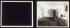

Timeline
Artworks acquired in 2006
Artworks acquired in 2005
Artworks acquired in 2004
Artworks acquired in 2003
Artworks acquired in 2002
Artworks acquired in 2001
Artworks acquired in 2000
Artworks acquired in 1999
Artworks acquired in 1998
Mrkr.
1998,
Darcy Huebler
Artworks acquired in 1997
Artworks acquired in 1996
Artworks acquired in 1995

A - B
1971,
Allen Ruppersberg
Artworks acquired in 1994
Artworks acquired in 1993
Artworks acquired in 1992
Artworks acquired in 1991
Artworks acquired in 1990
Artworks acquired in 1989
Artworks acquired in 1988
Artworks acquired in 1987
Artworks acquired in 1986
Ties
1974,
Bruce Yonemoto
Artworks acquired in 1985
Artworks acquired in 1984
Artworks acquired in 1983
Artworks acquired in 1982
Artworks acquired in 1981
Artworks acquired in 1980
Artworks acquired in 1979
Artworks acquired in 1978
Artworks acquired in 1977
Artworks acquired in 1976
Artworks acquired in 1975
Artworks acquired in 1974
Artworks acquired in 1973
Artworks acquired in 1972
Sphere
1964,
Francois Morellet
Artworks acquired in 1971
Artworks acquired in 1970
Artworks acquired in 1965
Artworks acquired in 1960
Artworks acquired in